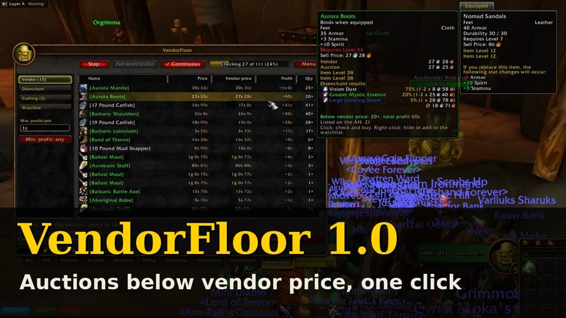
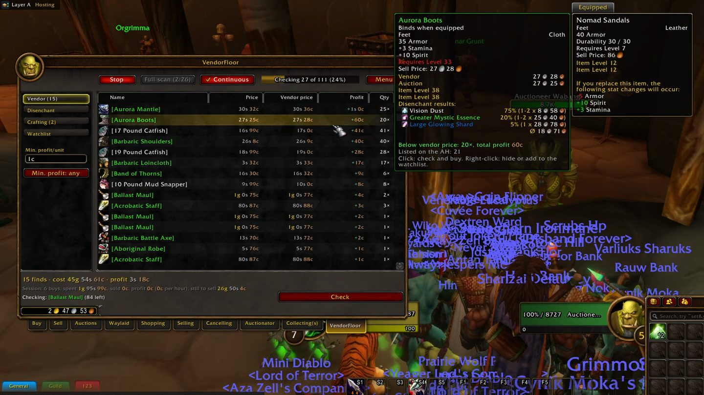
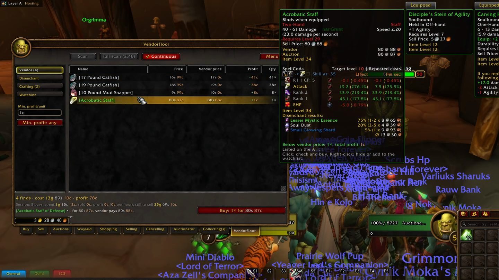
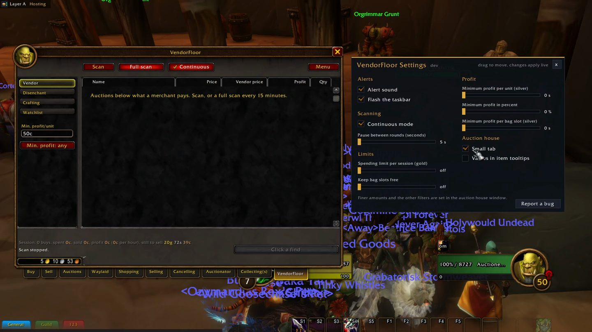
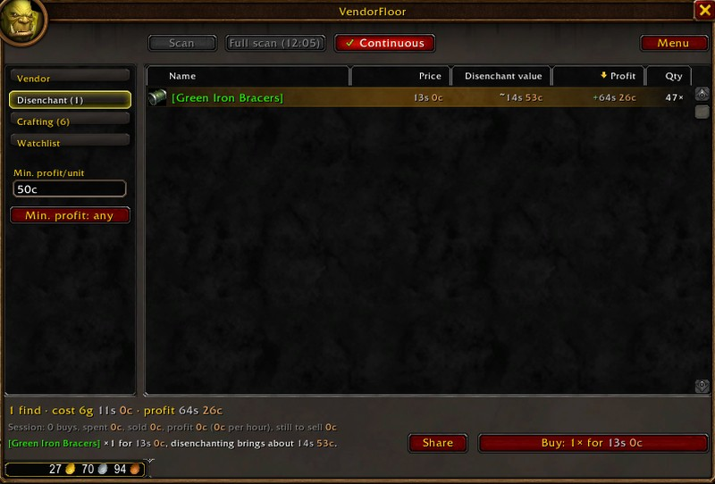
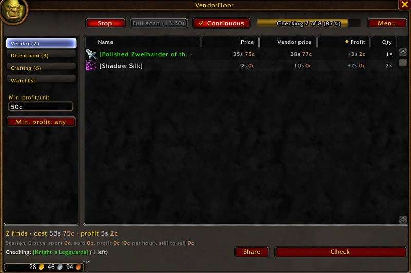
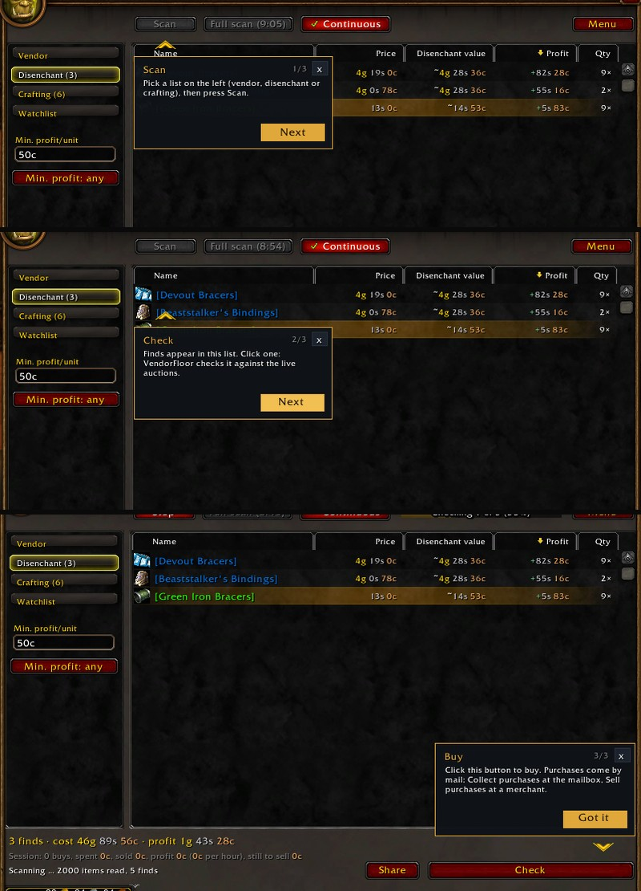
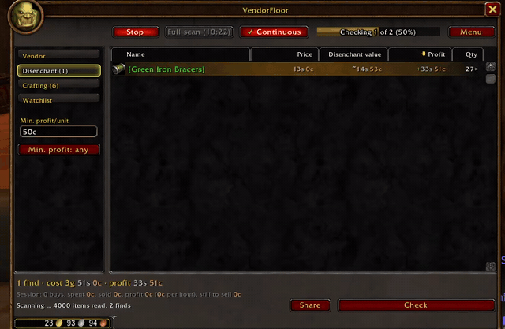

Buy below vendor price.
See what it really made.
VendorFloor finds auctions below vendor price, below disenchant value and profitable crafts, and buys them on your click. This page shows your ledger: profit per day, your best items and how long goods wait in your bags. Nothing is uploaded.
See it in the game
The 1.0 trailer opens on YouTube; nothing from YouTube loads on this page.

▶






Paste your ledger from /vfloor export
A sniper that does the boring part
Privacy
The page reads your ledger in your browser and keeps only the latest export in this browser's storage. Delete it any time with the link at the bottom. Every purchase in game is your own click.
Changelog
- First steps: the first time the VendorFloor tab opens, three small callouts point one after the other at the Scan button, the result list and the buy button (Next, Next, Got it). The x skips them; Menu > How it works shows them again.
- New: a short sound each time the Check or Buy button becomes clickable, so you no longer wait for the chat summary. It stays quiet right after your own click or a tab change. On by default, switch: Settings > Alerts > "Sound when ready to click" (thanks kanegasi, #27).
- The shared settings window (BencepoUI 4): the hint in its title row ("drag to move …") no longer runs into the title and version; it is shortened or left out when there is no room.
- The minimap button opens the settings with a left-click, like the other Bencepo addons. Right-click shows the ledger for the website (the totals are in Menu > Statistics).
- The settings window (BencepoUI) is now one version for all Bencepo addons: "Report a bug" sits in a footer of its own, and every settings window looks and works the same, whichever addon loads first.
- Disenchant values follow new material prices at once: a check or a crafting price lookup that finds dust, essences or shards at a new price now updates the disenchant tab right away instead of after the next full scan.
- Crafting prices leave your own commodity auctions out (they could pull the usual price of a reagent towards your own listing).
- The minimum profit filters the list at once, in both directions: raise it and finds below it hide, lower it and they come back (they were dropped until the next scan before). The input field saves the new value while you type, without Enter, and a click anywhere else ends the input; Escape undoes the change. The crafting tab and the percent slider in the settings follow at once too.
- Not enough gold no longer stops scanning: a find you cannot afford (or that the spending limit or free bag slots stop) is let go at once with a note in the status line, and continuous mode goes on. The find stays in the list; stackable goods were dropped from it before. A find ready to buy that nobody clicks is let go after 20 seconds in continuous mode too.
- Purchases confirmed only by the chat line now count for quick rounds too, like all other purchases.
- English only: the German translation is removed, VendorFloor shows the same English texts on every client.
- The minimap tooltip points to the settings instead of a chat command.
- Code cleanup, no change in how VendorFloor scans or buys.
30 older versions
- The disenchant basket works from a macro:
/click VendorFloorBasketButtondisenchants the next basket item, whatever the "cast on key down" setting says. The button now casts Disenchant on the bag slot directly instead of running a macro of its own.
- New icon in the addon list and on the minimap button, part of the new Bencepo logo family.
- "Internal auction error" no longer stops a purchase. WoW Forever's auction house sends it with purchases that go through: VendorFloor now waits two seconds for the confirmation, takes the red line off the screen, and counts the purchase as failed only if no confirmation comes.
- A purchase the auction house really refuses (e.g. the auction was sold a moment before) is not the end: VendorFloor tries the next auction of the same item at once.
- Hot deals: a find checked in the last 15 seconds is bought on the first click, without searching again. The auction keeps its price, so you never pay more; if it was sold meanwhile, the next auction of the item is tried.
- Faster buying: VendorFloor goes on the moment the auction house confirms a purchase instead of waiting. A single auction bought needs no new search, and the next find is ready at once when it was checked in the last 15 seconds: one click per purchase.
- Finds that turn out gone are skipped on the way.
- An empty answer from the auction house is asked once more before a find counts as gone.
- Alt+click on a find: a bug report to copy, with the find, the purchase state and the purchase log.
- Quick rounds learn from finds and purchases: items found often, above all those whose finds were gone again within two minutes (someone else was faster), and items that earned you the most are checked first (fading over 30 days), gear included, in the exact variants you bought before. Purchases from before this version count too: they come from the ledger kept for the website.
- Continuous mode goes on one second after a purchase instead of five, and the pause between rounds can be set down to one second.
- Menu > Purchase log: what happened during the last purchases, ready to copy into a bug report (Report a bug in the settings).
- Checks no longer hang ("Checking 3 of 4"): a scan whose next page never comes ends after 8 seconds, a find made ready to buy is let go after 20 seconds without a click, and a watchdog frees the check queue after 30 seconds without progress.
- A find whose auctions the auction house keeps refusing as gone is dropped after three tries instead of being tried auction by auction.
- "Your auctions" counts again: sales and expired auctions are now read from the mailbox (the invoice of each sale, the "Auction expired" mail), since the game hides the chat lines about them from addons. Statistics update when you open the mailbox, and sales made while you were offline count too. Each mail is counted once.
- Fixed Lua errors "attempt to index local 'msg' (a secret string value)": the game now hides some chat and error lines from addons. VendorFloor skips those instead of reading them. Purchases are still recorded through the auction house events; sales and expired auctions were no longer counted until 1.0.2.
- VendorFloor is now a tab of the auction house window, next to Buy, Sell and Auctions, instead of a separate window beside it. The tab is added with LibAHTab, the library Auctionator uses too: the tabs of all addons stay visible in one row, and Blizzard's tab list is left alone (changing it would taint your bags).
- Laid out like the auction house's own tabs: scan buttons on top, the lists (Vendor, Disenchant, Crafting) and the profit filters on the left like Blizzard's categories, the result list with column headers (price, value, profit, quantity) on the right, the buy button bottom right. Blizzard buttons, input field and insets, title in the window's title bar. Your gold stays visible below it.
- Column headers in Blizzard's style; click one to sort by name, price, value, profit or quantity, click again to reverse. The buy button follows the order shown.
- The menu opens as Blizzard's context menu and no longer slides under the list.
- Watchlist: a fourth list for items you want at or below a price of your own, optionally up to a number of units (done, it leaves the list). Add items in Menu > Watchlist or "Edit watchlist" (shift-click an item into the field). "Scan" on this list searches each watched item; normal and full scans fill it too. Watchlist purchases are collected from the mail but never sold to a merchant.
- Name suggestions while typing (from the third letter) in the watchlist and ignore list: items VendorFloor has seen in the auction house, your purchases and your bags. Up/Down to choose, Tab or Enter to take one. The list is built in small steps so the game does not stutter.
- Ignore list as a window (Menu > Ignore list): every hidden item with a button to show it again, or all at once; items can be hidden by name there too. No chat command needed any more.
- Scroll bar on the result list.
- Spending limit per session and bag slots to keep free (settings, both off by default). Purchases still in the mail count as taken slots until you visit the mailbox.
- Right-click on a find opens a small menu: hide the item, or add it to the watchlist with its price filled in. Before, a right-click hid the item at once.
- Settings: minimap button on or off, and "Forget unsold purchases" (with a confirmation).
/vfloor helponly lists the three commands left (/vfloor,buy,options); everything else is in the window. The old commands still work.- "Your disenchants" and "Your auctions" show item names instead of bare item IDs: items the game has not loaded yet are requested and the window fills in. Both windows in Blizzard's dialog look.
- Optional: disenchant value, latest auction price and watchlist limit in item tooltips (settings, off by default).
- New setting "Small tab": the VendorFloor tab only as wide as its text, so more addon tabs fit in one row. Until you set it, it follows Auctionator's "Small tabs".
- The auction house opens on the tab you used last: leave it on VendorFloor and it is there right away next time.
- Away from the auction house (crafting button in a profession window) VendorFloor still opens as a window of its own.
- No longer tied to Auctionator: works with any or no other auction addon.
- The "Craft profits" button sits above the profession window now. Below it, it could cover the "Create" button so that only "Create All" worked.
- Full scan works again. The request went out while a search was still under way, and the auction house drops such a request without an answer. VendorFloor now sends it once the auction house is free and sends it again if it is dropped.
- The full scan button can be clicked while a scan is running: the click stops the scan, continuous mode picks up again after the full scan.
- When a full scan cannot start, the status line says why.
- Full scan fixed for real: the auction house only answers a full scan started by a click. Continuous mode started it on its own, so the request was silently ignored and the scan hung on "waiting". Continuous mode now leaves the full scan to you: the button lights up when one is allowed. An unanswered full scan no longer blocks the button for 15 minutes.
- Merchant sales are only counted for items you sell (right-click or drop on the merchant), not for items split, moved or destroyed while the merchant is open.
- Mail collection also uses the free slots of the reagent bag.
- Disenchant purchases are counted down correctly when collected from the mail.
- Own-auction chat lines with positional placeholders (other client languages) are recognised.
- Ledger page: losing days hang below the zero line in the share image; the "Fastest sellers" bars match their labels.
- Several guards against missing game APIs and early calls.
- Full scan works next to Auctionator again. The auction house allows one full scan every 15 minutes for everyone: when Auctionator (its full scan or autoscan) had just used it, the auction house ignored VendorFloor's request and the full scan waited 10 minutes for nothing. VendorFloor now reads the auction list of any full scan that arrives, also one Auctionator started, and gives up after 90 seconds instead of 10 minutes.
- New "Report a bug" button in the settings window: shows the link to the issue page, ready to copy with Ctrl+C.
- Settings in a window of their own instead of a page in the game's options: drag it anywhere, it stays open while you play and every change applies at once. Open it from the menu (Settings) or with
/vfloor options; Options > AddOns > VendorFloor only points to it.
- Brighter icon that stays readable on the round minimap button.
- New icon: a gold coin in a sniper reticle, for the minimap button and the addon list.
- Less work outside the auction house: casting spells no longer reads the bags (only Disenchant does, and not in combat); looting no longer rescans the bags for the purchase tracker or an empty disenchant basket. Sales at a merchant are still counted.
- The window redraws at most ten times a second while item data loads during a scan, and its buttons no longer rebuild their frame on every hover.
- Closing the auction house now also ends a running scan, check or quote and frees the full scan's auction list.
- Full scans on a client with an empty item cache (a fresh install, or a client language you play for the first time: the cache is kept per language) found almost nothing, because most items had not loaded within 30 seconds. The scan now asks for each item once and keeps waiting as long as items keep arriving, up to 3 minutes.
- Normal scans also pick up items whose data arrives later.
- The disenchant basket is its own small window now, not a button on the mail window. It only appears for characters that can disenchant, and only when new disenchant purchases arrive in your bags, or when you open it by hand (Menu > Disenchant basket). It closes when it is empty or with its x, and you can drag it anywhere.
- Removed fallbacks for old clients (bags, addon info) and the spare minimap button that was only used without LibDBIcon.
- Code check with LuaLS and the WoW API annotations runs with every change.
- Disenchant basket: items bought on the disenchant tab go into a basket. At the mailbox a "Disenchant basket" button appears below "Collect purchases": each click disenchants the next item, no cursor, no searching the bags. It also works on a key (Key Bindings > AddOns > VendorFloor), anywhere, not only at the mailbox. Every disenchant is still one click or key press. In combat the button does nothing.
- Vendor purchases that land in the reagent bag (profession bag) when collected from the mail are now sold at the merchant like the rest.
- An auction the auction house refuses to sell ("Internal auction error") is no longer offered again and again: each auction is bid on once, then the next one is checked.
- First release out of beta.
- While a full scan runs, the window says what is happening and that the first finds appear in about a minute, instead of an empty list.
- The progress bar shows "loading item data" in the second half of a full scan instead of "waiting for the auction house".
- "1 find" and "1 craft with profit" instead of "1 finds" and "1 crafts"; no stray comma before the profession list.
- The disenchant tab explains where its values come from (WoW Forever tables and your own results).
- New addon description in the addon list and in addon managers.
- Now also on Wago Addons.
- Own minimap and addon list icon.
- Own auctions: a buyer or an expiry is counted for the oldest auction without a buyer yet, so expired auctions are no longer missed after a sale.
- Automated tests (busted) for prices, minimum profit, disenchant values and own auctions run with every change.
- Minimum profit in percent right in the window: click for more, right-click for less. It also hides finds that are already listed.
- New Menu button: statistics, your disenchants, your auctions, export and settings, without chat commands.
- Wands made by enchanters are no longer offered as disenchant finds; an item the game refuses to disenchant is remembered and hidden too.
- The saved finds follow every quick scan, check and purchase, not only the full scan: the next visit no longer starts with finds that are long gone, and new finds from quick scans are kept.
- Every checked item updates its stored price (median and cheapest listings), so prices stay fresh between full scans.
- The tooltip of a disenchant find says whether its value comes from your own disenchants or from the general table.
- VendorFloor learns from your own disenchants: it records what each item gave you, and after 3 disenchants of an item (or 5 of the same kind and item level) it values finds by your real results instead of the general table.
- New command /vfloor de shows your recorded disenchant results.
- VendorFloor records your own auctions (also when posted with Auctionator): how long until a buyer is found, the price that sold and how many expire. Disenchant materials and crafted items are valued at the price that really sold and by the share that sells. /vfloor sales shows it.
- Much faster buying of gear finds (disenchant tab, gear in the vendor tab): a purchase check that gets no answer gives up after 5 instead of 15 seconds, tries the plain item key right away, and remembers per item which key works.
- Each tab scans for itself: "Scan" on the disenchant tab reads only green and blue weapons and armor, the vendor tab only looks for vendor finds (lighter on the frame rate). The crafting tab gets a "Prices" button: one search per reagent and product of your recipes, the current price goes into the price history. Continuous mode follows the tab shown; full scans still fill every tab.
- Realistic material prices: disenchant values and crafting use the price of the cheapest listings (the price a sale has to beat, or the price you buy at) instead of the median, which was too optimistic (a shard valued at 25s that sells for 22s).
- Disenchant values now follow the WoW Forever table: rows by the level required to equip the item (not its item level), the same row for green and blue items, a shard chance of about 4% for greens. Before, the Classic table by item level gave values one band too high or too low.
- Disenchant finds are grouped by item: all levels and suffixes of an item are one row (they disenchant the same). Buying tries the cheapest variant first, then the next.
- Disenchant finds show their disenchant value ("DE ~13s 19c") instead of a vendor price in the list, the status line and chat.
- Items bought on the disenchant tab can be taken out of the mail with "Collect purchases" as well.
- Removed the market tab and posting: too many questionable finds and checks. Price history stays (disenchant materials, crafting).
- Disenchant tab between full scans: normal scans and quick rounds also find gear below its disenchant value (with the prices stored by earlier full scans).
- The finds of the last full scan (up to an hour old) are back when you open the auction house again, so the tabs are not empty until the next full scan is allowed. They are checked when you click them.
- At most 150 checks per round, the most promising first; the rest follow in the next round.
- Sound and taskbar flash once per round (at most once a minute) instead of per find; the check counter counts up correctly.
- Quieter chat: no line per find any more, one line per round with the new finds per tab (sound and taskbar flash stay).
- New tab Crafting: which of your learned recipes make a profit right now. Product value: auction house after the 5% cut or a merchant, whichever is more; reagents: auction house or merchant, whichever is cheaper. Recipes are read when a profession window is open (a "Craft profits" button there opens the tab), merchant prices of reagents when a merchant window is open, auction prices come from full scans.
/vfloor craftlists the best ten in chat.
- Three tabs, never mixed: Vendor (below what a merchant pays), Market (far below the usual price, to sell again on the auction house) and Disenchant (green and blue weapons and armor below what disenchanting them brings).
- Price history: every full scan stores the usual price of each item (median, last 14 days). The market tab uses it; it gets better with every day of full scans.
- Disenchant values after the Classic disenchant tables, with the materials at their usual price (an estimate: WoW Forever may differ).
- Posting: in the market tab a "Post" button puts the next item bought there on the auction house for 24 hours, just under its usual price and never below cost plus the minimum profit. One auction per click. Sales come from the seller mails and go into the ledger.
- Minimum profit in percent and per bag slot (whole auction), for all tabs:
/vfloor percent 20,/vfloor slot 10s, also in the settings. - Quick rounds: items found below vendor price before are kept on a watch list; continuous mode checks the most frequent of them one by one (two quick rounds, then one full item list), and runs a full scan whenever one is allowed.
/vfloor quickstarts one by hand. - Taskbar flash on new finds while the game is in the background (
/vfloor flash, settings). - New look: flat dark window in the colours of the web page, gold accents, flat buttons (also at the mailbox and merchant), a "Continuous" switch, zebra rows and a clearer progress bar. Larger text throughout; the buy button shows its amounts in dark text so they stay readable on gold.
- Fix: single items (e.g. bags) could show hundreds of units for one auction, with a unit price below 1 copper and a huge fake profit. Units per auction are now capped at the stack size, and prices below 1 copper per unit are ignored.
- Fixed: the "Sell purchases" button at a merchant (and "Collect purchases" at the mailbox) could appear as an empty red bar without its text until the bags changed.
- Minimap button (LibDBIcon, so minimap button collectors can take it): left-click opens the ledger export (at the auction house: the window), right-click prints the totals, the tooltip shows today's and the total profit. Drag to move,
/vfloor minimaphides or shows it. VendorFloor also appears in the game's addon menu next to the minimap. - Continuous mode: between two rounds the scan button shows "Stop (12)" with the seconds to the next round, so it is clear the loop is running. While a round, the checks or the loop run, the button stays pressed in. A click stops it.
- Fixed: the arrow between auction and vendor price showed as an empty box.
- Progress bar shows its text: percent of the full scan, "checking 12 of 40 (30 %)", or the auctions read so far.
- Fixed: after a purchase the round could stop with "Bought." and a half-full bar, because the auction house kept reporting that it was not ready for the next query. Such a query is now sent anyway after 10 seconds.
/vfloor debugprints the internal state if it still happens. - Sales by other addons count: bought items sold at a merchant in any way (for example by an addon that sells grey items automatically) now go into the ledger. VendorFloor counts them from the bags.
- Faster checks: a check waits 3 instead of 6 seconds for an answer, and a find that stays silent twice (sold out meanwhile) is skipped for 30 minutes instead of being checked every round.
- Fewer useless checks: an item checked without a buyout below the vendor price (for example one with bid-only auctions) is skipped for 30 minutes, unless a cheaper listing appears.
- Ledger per day and per item: spending, sales and real profit per calendar day (last 120 days), and per item how many were bought and sold and how long they waited until the sale.
/vfloor export: the ledger as text to copy into the new web page https://bencepo.github.io/vendorfloor/ (profit per day, best items, holding time). Nothing is uploaded; the page runs in your browser.- LevelTrail, if installed, shows your VendorFloor profit next to your gold curve and per play session.
- Full scan: reads every auction of the auction house at once (allowed every 15 minutes). Each auction comes with its buyout, so finds appear complete and without checking each item. Between full scans the normal rounds keep running.
- Collect purchases: a button at the mailbox takes the items VendorFloor bought out of the auction house mail.
- Sell purchases: a button at a merchant sells them, at most as many as VendorFloor bought, so items of your own stay.
- Ledger counts sales and the profit they really made, profit per hour and what is still to sell.
/vfloor statsshows the totals,/vfloor forgetclears the purchases still to sell. - Progress bar for full scans and checks, and a summary line with the cost and profit of the whole list.
- Faster checking: results the auction house already holds are read at once instead of after a 15 second wait.
- Fewer lost finds: a check without an answer is tried again later instead of dropping the find, and several variants of one item (e.g. "of the Bear", "of the Monkey") whose data is still loading are all kept.
- Stackable goods appear in the list right after the scan; the check then counts the units below vendor price ("?×" until then).
- Single items are checked first, best potential profit first.
- Fixed: the window failed to open with "attempt to index upvalue 'L'" when the texts file had not been loaded. VendorFloor now falls back to English texts.
- English interface; German when the game client is German.
- Key binding "Buy next find" (Options > Keybindings > AddOns) and
/vfloor buy: each press checks or buys the best find. - Stackable goods are checked before they are listed, so the list shows how many units are really below vendor price.
- Each row shows the total profit and the number of units.
- Right-click a find to hide that item for good.
/vfloor ignore listand/vfloor ignore clear. - Settings under Options > AddOns > VendorFloor: alert sound, continuous mode, pause between rounds, minimum profit.
- Session ledger in the window (buys, spent, vendor value, profit) and
/vfloor statsfor totals since install. - The version is shown in the window title and in
/vfloor help. - The list is cleared when the auction house closes, since prices change in the meantime.
- First release. Finds auction house listings priced below vendor value and buys them on click.
- Only auctions with a buyout price are listed; bid-only auctions are ignored.
- Adjustable minimum profit per unit (
/vfloor profit). - Interface currently in German.
More from Bencepo
ProcFlare
SwingCast
StatTrim
Feedback, bugs and ideas
Every addon is tested in game before it ships, but Forever changes often. Tell me what breaks and what you miss.
Report a bug
Open an issue on GitHub (the form asks for everything needed) or leave a comment on CurseForge: what you did, what happened, and the error text from BugSack if there is one.
Share your run
LevelTrail turns your export into a share image for Discord or Reddit, VendorFloor does the same for your flips. Names can be hidden.
Suggest a feature
Ideas that make leveling faster or the UI calmer have the best chance. Comments on CurseForge reach me directly.
Support the addons
All addons and pages are free and stay free, without ads or cookies. A privacy-friendly counter only tallies page views. If they save you time in game, a tip keeps new features and fixes coming.